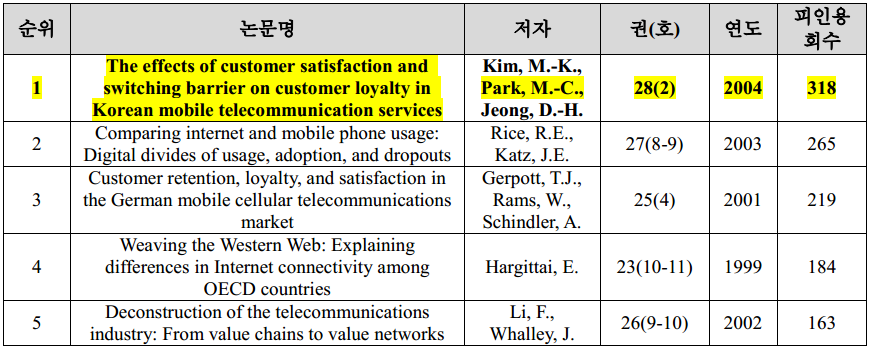
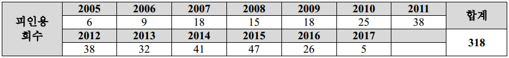
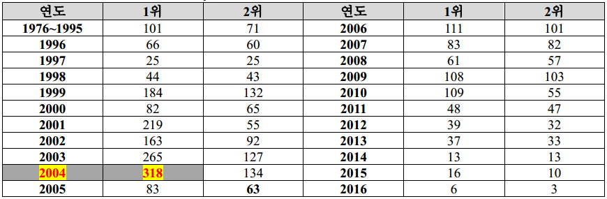
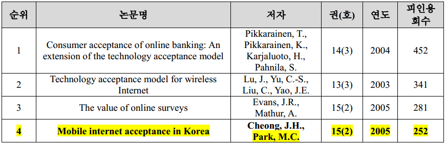
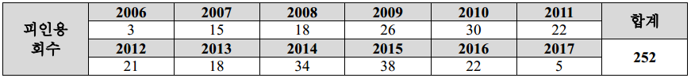
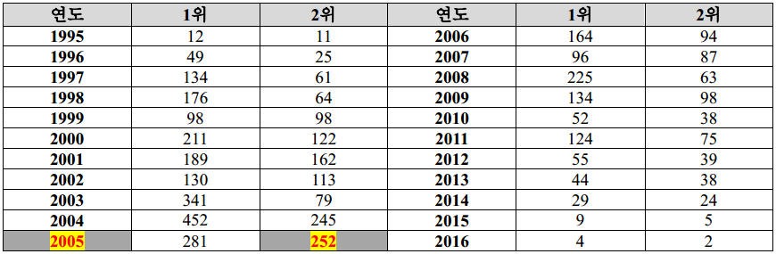

SMITers.Captain
Myeong-Cheol Park(박명철, 朴明徹)
Professor, School of Business and Technology Management, KAIST
e-Mail:: imcpark@kaist.ac.kr
Homepage: http://smit.kaist.ac.kr
Office:: +82 42 350 6313
Fax:: +82 42 350 6339
Myeong Cheol PARK is a professor of the School of Business and Technology Management at Korea Advanced Institute of Science and Technology (KAIST) in Korea. He was a board member of CPRsouth (Communication Policy Research South) as the representative of Korea, and former President of Korea Technology Innovation Society. He published many distinguished papers in the areas of telecommunications management strategy and economics including Telecommunications Policy, Information Economics and Policy, Internet Research, Journal of Global Information and Management, Information Technology and Management, Information Systems and e-Business Management, Management Decision, Psychology & Marketing, Information Development, Telematics and Informatics, and Behavior & Information Technology. His paper published in Telecommunications Policy in 2004, is now honored as the most highly-cited paper, No.1, among all the papers (more than 2221 papers published as of Dec 2016) since this journal launched from 1976. Another paper published in Internet Research in 2005 is cited 4th highest since this journal launched from 1995 (among 989 papers as of Dec. 2016). As of now, his H-index is shown as 10 in the Scopus, 13 in the Google Scholar. Before joining KAIST, he worked for Electronics and Telecommunication Research Institute (ETRI), one of the largest Korean government research institutes. He received his BS and MA degrees from Seoul National University in Korea, and his PhD degree in business administration from the University of Iowa in the USA.
Education
BS in Industrial Engineering, Seoul National University (SNU), Korea. (1976)
MA in Business, Graduate School of Business, SNU, Korea (1982)
Ph.D. in Business, Graduate School of Business, The University of Iowa, USA (1990)
Job Experience
Oct. 2012-Mar. 2015 Chair, School of Business and Technology Management, KAIST
Oct. 2012-Dec.2012 Dean, Graduate School of Innovation and Management (I&TM), KAIST
July 2009-Present Professor, School of Business and Technology Management, KAIST
Mar. 2009-July 2009 Professor, Department of IT Business, KAIST
Oct. 2003-Feb. 2009 Professor, School of IT Business, ICU (merged with KAIST)
Sept. 2004-Aug. 2005 Visiting Professor, Institut National des Telecommunications (INT), France
June 2003-July 2004 Dean, School of IT Business, ICU
June 2002-June 2003 Director of IT Business Research Institute, ICU
Mar. 2000-Mar. 2001 Dean, School of Business, ICU
Jan. 1998-Sept. 2003 Associate Professor, School of Business, ICU
Mar. 1992-Aug.1992 Adjunct Professor, Department of Management Sciences, KAIST
Aug. 1986-Dec. 1990 RA, TA, Lecturer, College of Business Admin, University of Iowa
July 1981-Dec. 1997 Principal Researcher and Head of Telecommunications Management Section, Electronics and Telecommunications Research Institute (ETRI)
Sept. 1978-Mar.1981 Korean Army (Military Service)
Service and Activities
KAIST (교내)
기술경영학과장 (2012 - 2015)
기술경영전문대학원장 (2012)
IT경영학부장 (2003 - 2004)
경영학부장 (2000 - 2001)
경영대학 교원인사심의회 (2016-현재)
경영교육발전위원회 (2016 - 현재)
기술경영학과 교원인사심의회 (2009 - 현재)
과학기술정책대학원 교원인사심의회 (2015 - 현재)
교수평가혁신 소위원회 인문융합분과 (2014)
미래전략대학원 교원인사심의회 (2013 - 2015)
기술경영전문대학원 교원인사자문위원회 (2009 - 2015)
ICC 운영위원회 (2013 - 2015)
인문사회융합과학대학 교원인사심의회 (2013 - 2014)
웹사이언스공학전공 교원인사심의회 (2011 - 2014)
Outside KAIST (교외)
Invited Speaker, Universidad del Pacifico, Lima Peru, Sept, 2016
Invited Speaker, EuroCPR 2013, A digital Agenda in Search of Evidence: Issue and Trend, The Contre of European Policy Studies, Brussels, Belgium, May, 2013.
Honorary President, Korea Technology and Innovation Society (Jan 2011 - present)
Chair, Government Loan Committee for ICT Start-up (Ministry of Science, ICT and Future Planning, 2007 - present)
Editorial Board Member, AJIP (Asian Journal of Innovation and Policy), (2012 - present)
President, Korea Technology and Innovation Society (Jan 2008 - December 2008)
Board Member, CPRsouth (Communication Policy Research South) (2007-2015)
Invited Seminar and Lectures, Eurasian National University, Kazakhstan. (June 15-30, 2012).
Vice President, Korea Technology and Innovation Society (Jan. 2005 - Dec. 2007)
Program Committee, Conference, ITS India, Feb. 2012.
Program Committee, International Conference on Machine and Web Intelligence (ICMWI 2010), USTHB University, Algiers, October 3-5, 2010.
Program Committee, CPRsouth 7 Conference, Mauritius (Sept 5-7, 2012)
Program Committee, CPRsouth 6 Conference Bangkok, Thailand (Dec 9-11. 2011)
Program Committee, CPRsouth 5 Conference China Xian (Dec 4-8, 2010)
Program Committee, CPRsouth 4 Conference, Colombo Srilanka (Dec 5-9, 2009)
Program Committee, CPRsouth 3 conference, Beijing, China (2008)
Program Committee, CPRsouth 2 conference, Chennai, India (2007)
Program Committee, CPRsouth 1 conference, Manila, Philippines (2006)
Guest Columnist of Science Review, Segye Daily Newspaper (April 2007 - March 2008)
Advisor to the president of KISTI (Korea Institute of Science and Technology Information) (2007)
Guest Columnist of Science Column, Digital Times (March 2006 - Dec. 2006)
Vice President, Korea Valuation Association of Technology Enterprise (2000 - 2003)
Invited speaker, Global Capacity Building in ICU Policy and Regulation: CPRsouth, IPPSO Symposium, Seoul Korea (Oct 2008)
Invited speaker, Global Capacity Building in ICU Policy and Regulation: CPRsouth, IPPSO Symposium, Seoul Korea (Oct 2008)
Keynote Speaker, Broadband Internet in Korea, ITTP-ITPP International Conference, Tunis, Tunisia (June 2008)
Invited speaker, Broadband Internet in Korea: Current Status and Success Attributes, CPRsouth 3 Conference, Beijing (Dec. 2008)
Keynote Session Chair, 2009 IT Industry Prospect Conference, Seoul, Korea (Oct. 2008)
Keynote Session Chair, 2007 IT Industry Prospect Conference, Seoul, Korea (Oct. 2006)
Keynote Session Chair, 2004 IT Industry Prospect Conference, Seoul, Korea (Oct. 2003)
Editorial Committee, Journal of the Korean Institute of Communication Science (2000 - 2010)
Editorial Committee, ETRI Journal (1997 - 2004)
ICT Committee Member, 2002 World Cup Soccer Games, Seoul (1997 - 2002)
Korean Delegates, ITU World Telecommunication Policy Forum, Geneva (1996)
Government Committee for Privatizing Korea Telecom Authority (1994 - 1995)
Policy Consultant, The Technical Assistance for The Third Telecommunications Project Indonesia, ADB (Asia Development Bank) (1994 - 1995)
Student Supervision
Current Students: 5 students (5 PhD’s)
Degree Received: 53 students (14 PhD’s and 39 Masters in Business)
Job Placement: Seoul Women’s University, BNU-HKBU United International College (China), Universidad del Pacifico(Peru), KT, SKT, LG, ETRI, KISDI, Alcatel-Lucent, SERI, Samsung Networks, LG-CNS, KOTRA, TTA, IITP, NIPA, KEPCO, POSCO, Samil-PricewaterhouseCoopers, NIA, etc.
Teaching Statement
One of my teaching philosophy is that business major student should have an excellent problem solving ability. Before joining KAIST (Formerly ICU), I work for ETRI, a well-known national ICT research institute in Korea, for more than 16 years. In ETRI, I conducted various research projects in the area of management, economics and regulatory issues of ICT industry. So I had many research cases which could be used in the class discussion. The interdisciplinary approach becomes one important aspect of technology management school. Based on this philosophy, I designed a unique graduate curriculum particularly customized for global ICT business environment.
One example of graduate course (MA) for the ICT business student is ‘Issues in the Information and Telecommunication Management’. Of course, there was no textbook available. I designed the course packet in my own way. The course consists of three important subjects specially related to ICT industry: Technology, Regulation and Strategy. Because ICT industry is technology-based, regulated, and fast-changing industry, students should understand all three subjects to enhance problem solving capability. From each of three subjects, two aspects are considered: theory and practice. I selected some classical theories and related real cases from the global ICT market respectively, and then combined them together for the class discussion purpose. When I delivered my own experience to the class, the student response was far more than expected, since the case study was so live and real to them. I believe that this course was a great help to the graduate students when they were working in the ICT industry after graduation.
I created another course for MBA program, ‘Strategic Management for ICT Business.” For MBA students, the practical aspects should be more emphasized rather than theoretical aspects. I redesigned a new course focusing on case studies from the domestic and global ICT industry. This course also seemed to be a success to the MBA students. It is evidenced when this course was selected as one of best three courses from all MBA programs in Korea by a well-known newspaper, Maeil Economic Daily in 2007.
In earlier times, the ICU’s weak brand name as a new university was one problem. ICU was a young and small-sized, specialized university. Although ICU was well recognized as a top tier university to ICT industry experts in Korea, it was not widely known to the general public. I thought that the good brand name is one of the most important factors to attract smart students nationwide. One idea came up to me and I implemented it. I encouraged my graduate students to apply for the student paper competitions as many as possible. My idea was that, if they won the prize in open competition, ICU brand name would become automatically stronger. It was a great success. More than 15 times, SMIT(Strategic Management of Information and Telecommunication) Lab graduate students won the first or the second prizes from various paper competitions sponsored by distinguished global and domestic organizations such as ITS, Samsung, KT, SKT, and major daily newspapers. Owing to this success, they also received good job offers from many global institutes and leading ICT companies such as Seoul Women’s University, BNU-HKBU United International College (China), Samsung, KT, SKT, Alcatel-Lucent and ETRI when they graduated.
Research Statement
I have worked in the areas of telecommunications economics and business strategy. I have investigated strategic issues focusing on the relationship among regulatory, business and the consumer behavior in the telecommunications market. More specifically, it includes regulatory issues, corporate and business strategies, marketing, standardization, interconnection, customer behavior and market characteristics in the ICT industry.
In addition to the research reports, I invested my effort to publish academic papers. I published academic papers in the areas of telecommunications management strategy and economics in the various international and domestic refereed journals: 28 SSCI/SCI journals and 44 KCI journals. I also presented our research results in more than 50 international and more than 60 domestic conferences. Some examples of international SSCI/SCI journals include Telecommunications Policy, Information Economics and Policy, Internet Research, Journal of Global Information and Management, Scientometrics, Information Technology and Management, Information Systems and e-Business Management, Management Decision, Psychology & Marketing, Information Development, Telematics and Informatics, Behaviour & Information Technology, and ETRI Journal.
Published papers were highly cited in this field. For example, one of my paper related to the mobile telecommunication market published in Telecommunications Policy in 2004, is now the most highly-cited (Rank No. 1) among all the papers more than 2221 papers published as of Dec. 2016, in Telecommunications Policy since its launch from 1976. And another paper published in Internet Research in 2005 related to the mobile internet, is cited 4th highest since this journal launched from 1995 (among 989 papers as of Dec. 2016). As of now, my H-index is shown as 10 in the Scopus web site (https://www.scopus.com/authid/detail.uri?authorId=7404491216), and 13 in the Google Scholar. Considering the limited readability because of the specific industry domain and subjects, this performance is recognized as excellent one in the social science academics. (www.scopus.com) [See (6.2) and (6.3) below for details]
In addition, I published my articles as chapters in 8 books published by Elsevier, IGI publisher and QuantiFica publisher and so on. To disseminate the research findings, I also wrote many non-academic articles in the well-known Korean newspapers as a designated guest columnist for 2 years. In 2007, I was elected a board member of the CPRsouth (Communications Policy Research South). CPRsouth is one of the most influential global academic communities in the regional ICT policy studies. The CPRsouth board members were selected on the basis of academic performance in the academic journals in the world. At that time, nine international scholars were elected from nine countries. I was elected as the representative member of Korea. Being elected as a board member is an honor and is also an evidence to show international recognition of academic research performance in terms of quality in the ICT field.
Citation
대표 연구 성과 1
연구논문: The effects of customer satisfaction and switching barrier on customer loyalty in Korean mobile telecommunication services.
발표 저널: Telecommunications Policy, vol. 28 no.2 (2004) pp.145-159 (정보통신 경영/경제/정책에 관한 대표적인 저널임)
선정 이유: 1976년 해당 저널 창간 이후, 지금까지 40여년 동안 발표된 총 2,221논문 중에서 피인용 순위가 전체 1위임 (2016년 12월현재, www.scopus.com)
역대 최다 피인용 순위 (1976년 창간 이후 총 2,221 게재논문 중 1위)

저널 창간 이래(1976년) 발표된 논문 중에서 최다 인용되었으며, 인용횟수가 최근 꾸준히 증가하고 있는 추세임.

Telecommunications Policy 게재 논문 가운데 연도별 최다 피인용 회수

https://www.scopus.com/results/results.uri?cc=10&sort=cp-f&src=s&nlo=&nlr=&nls=&imp=t&sid=7B2B8C0EBB0315B1F0A67FCCD8401287.euC1gMODexYlPkQec4u1Q%3a3990&sot=br&sdt=a&sl=56&s=SOURCE-ID%2820870%29+AND+PUBYEAR+IS+2004+AND+NOT+DOCTYPE%28ip%29&ss=cp-f&ps=r-f&editSav
대표 연구 성과 2
연구논문: Mobile internet acceptance in Korea.
발표 저널: Internet Research, vol. 15 no.2 (2005) pp.125-140
선정 이유: 1995년 해당 저널 창간 이후, 지금까지 22년동안 발표된 총 989논문 중에서 피인용 순위가 전체 4위임 (2016년 12월현재, www.scopus.com)
역대 최다 피인용 순위 4위 (1995년 창간 이후 총 989 논문 게재)

저널 창간 이래(1995년) 발표된 전체 논문 중에서 총4위에 랭크 되었으며, 인용횟수가 지속적으로 꾸준히 증가하고 있는 추세임.

Internet Research 게재 논문 가운데 연도별 최다 피인용 회수

http://www.emeraldinsight.com/action/showMostCitedArticles?journalCode=intr
Best Paper Awards (with supervised students)
- Eunhye Kim, Myeong-Cheol Park, “Antecedents of Cross-Channel Free-Riding Intention : The Moderating Effect of Product Categories Using Push-Pull-Mooring Framework”, 2015 한국경영정보학회 춘계학술대회, 최우수 논문상, 2015년 8월 4일.
- Minkyoung Kim, CPRsouth Young Scholar Award, CPRSouth2: “Empowering Rural Communities through ICT Policy and Research”, Indian Institute of Technology Madras India, December 14-18, 2007.
- Best Professor 2004 (in Research) at ICU
- JH Park, Mobile Service Provider's Strategic Choice: Price Reduction or Mileage Promotion, Student Paper Competition, Second prize, Maeil Daily Economy Newspaper, Dec. 2005.
- JH Park, YS Kwon, MC Park, Membership Card Promotion vs. Price Reduction in the Mobile Telephony Market, International Conference of Korean MIS Association, Best Paper, Nov.2005.
- JS Moon, A Comparative Study of Relationship between Innovativeness of Customer and Determinants of Intention to Purchase Innovative Technology Product Employing TPB, Best Paper, Korea Telecommunication Policy Association, Nov. 2005.
- JH Whang, A Study on Measurement of Standardization Level in Information and Telecommunications Technology: Multi Attribute Utility Theory Approach, Best Paper, Paper competition of Korea Standard Association, 2004.
- SH Lee, An Index Model for Standardization in IT Industry, Second Prize, Paper competition of Korea Standard Association 2003.
- SH Lee, Rethinking Speed Competition of Broadband Internet Service, Second Prize, Student Competition, Maeil Daily Economy Newspaper, 2003.
- Minkyung Kim, Gyudong Yeon and Myeong-Cheol Park "Determinants of Customer Retention for the Korean High-Speed Internet Service", Second Prize, 14th ITS Biennial Conference, Seoul, August 18-21, 2002.
- Sangwoo Lee and Myeong Cheol Park, "Why High Prices of Mobile Calls: Evidence of Double Marginalization in the Korean Market", Second Prize, ITS Indian-Asia Conference, Perth, Australia, July 2001.
- Gyudong Yeon, Minkyung Kim, "A Strategy to increase Customer Loyalty of Broadband Internet Service Providers, Student Paper Competition, Best Paper, Maeil Daily Economy Newspaper, 2001.
- Moonku KIM, "A Strategy for Competitive Advantage of IMT-2000 Service," Second Prize, Student paper competition, KT and Hankook Daily Economy Newspaper, 2000.
- Jaehyun Kim, SolheeYu, , A Study on th synergy effect of M&A in Mobile Telecommunication Industry, Third Prize, Student paper competition, KT and Hankook Daily Economy Newspaper, 2000.
- Hyunmok Oh and Kwanyoung Kim, "An Empirical Study on Effectiveness of IT Technology-based Venture Firms", Best Paper Award, Student Paper Competition, Small and Medium Firms Promotion Agency, Nov. 2000.
- Seonmu Cho, " An Idea for National Innovation System through E-network", Best Paper Award, Hoam Paper Competition, Hoam Foundation and Choongang Daily Newspaper, Sept. 2000.
- Mandu Kim, Sangwoo Lee, and Kiduk Kwon, "A Suggestion on Issuing IMT-2000 Service Provider License", Best Paper Award, Paper Competition, SK Telecom and DonA Daily Newspaper, Nov. 1999.
- SW Lee and Mandu Kim, "How to Promote IT Venture Start-Up", Best Paper Award, Student Paper Competition, KT and Hankook Daily Economy Newspaper, Dec. 1999.
SSCI, SCI/SCIE Journals
- Sun Me Choi, Siew Fan Wong, Younghoon Chang, Myeong-Cheol Park (2016). “Analysis of the dynamic broadband technology competition: implications for national information infrastructure development”. Industrial Management & Data Systems, 116(6), 1223-1241. [SSCI]
- Jean Pierre Guy Gashami, Younghoon Chang, Jae Jeung Rho, Myeong-Cheol Park (2016). “Privacy concerns and benefits in SaaS adoption by individual users: A trade-off approach”. Information Development, 32(4), 837-852. [SSCI]
- KyeongNam Yeon, Siew Fan Wong, Younghoon Chang, Myeong-Cheol Park (2016). “Knowledge sharing behavior among community members in professional research information centers.” Information Development, 32(3), 655-672. [SSCI]
- Younghoon Chang, Siew Fan Wong, Myeong-Cheol Park, (2016). “A three-tier ICT access model for intention to participate online a comparison of developed and developing countries.” Information Development, 32(3), 226-242. [SSCI]
- Christian Libaque Saenz, Siew Fan Wong, Younghoon Chang, Young Wook Ha, Myeong-Cheol Park, (2016). “Understanding antecedents to perceived information risks: An empirical study of the Korean telecommunications market”, Information Development, 32(1), 91-106. [SSCI]
- Minkyoung Kim, Younghoon Chang, Myeong-Cheol Park, Jongtae Lee (2015). “The effects of service interactivity on the satisfaction and the loyalty of smartphone users” Telematics and Informatics, 32(4), 949-960.
- Apollos Patricks Oghuma, Younghoon Chang, Christian Fernando Libaque-Saenz, Myeong-Cheol Park, Jae Jeung Rho (2015). “Benefit-confirmation model for post-adoption behavior of mobile instant messaging applications: A comparative analysis of KakaoTalk and Joyn in Korea.” Telecommunications Policy, 39(8), 658-677.
- Moon-Koo Kim, Younghoon Chang, Siew Fan Wong, Myeong-Cheol Park, (2015). “The effect of perceived risks and switching barriers on the intention to use smartphones among non-adopters in Korea”, Information Development, 31(3), 258-269.
- Young Wook Ha, Jimin Kim, Christian Libaque Saenz, Younghoon Chang, Myeong-Cheol Park, (2015). “Use and gratifications of mobile SNSs: Facebook and KakaoTalk in Korea.” Telematics and Informatics, 32(3), 425-438.
- Young Wook Ha, Myeong-Cheol Park, Euehun Lee. (2014). “A Framework for Mobile SNS Advertising Effectiveness: User perceptions and behaviour perspective.” Behaviour & Information Technology, 33(12), 1333-1346.
- Ilgu Cho, Myeong-Cheol Park, (2014). “Technological-level evaluation using patent statistics: model and application in mobile communications.” Cluster Computing, online first published on March 25, 2014.
- Moon-Koo Kim, Younghoon Chang, Siew Fan Wong, Myeong-Cheol Park, (2013). “The effect of perceived risks and switching barriers on the intention to use smartphones among non-adopters in Korea”, Information Development, online first published on December 19, 2013.
- Young Wook Ha and Myeong-Cheol Park, (2013). Antecedents of Customer Satisfaction and Customer Loyalty for Emerging Devices in the Initial Market of Korea: An Equity Framework. Psychology & Marketing, 30(8), 676-689.
- Jongtae Lee, Myeong-Cheol Park, Junghoon Moon, (2013). “Factors affecting the performance of mobile office outsourcing: An approach using the FORT model and the MoBiS-Q”, Management Decision, 51(7),
- Jongtae Lee, Dongwon Lee, Junghoon Moon, Myeong-Cheol Park, (2013). “Factors affecting the perceived usability of the mobile web portal services: comparing simplicity with consistency.” Information Technology and Management, 14(1), 43-57.
- J.T. Lee and M.C. Park, “Factor Affecting the Smartphone Users to Use the Mobile Portal Services: Focusing on Korean Mobile Portals”, Information Systems and e-Business Management, published online: 26 September, 2012, forthcoming.(SSCI)
- J.T. Lee, D.W. Lee, J.H. Moon, M.C. Park, “Factors Affecting the Perceived Usability of the Mobile Web Portal Services: Comparing Simplicity with Consistency”, Information Technology and Management, Published online: 13, September, 2012, forthcoming.(SSCI)
- J.T. Lee, M.C. Park, Y.C. Choe, and J.H. Moon, “Impact of charging strategy on e-Loyalty: Failure Case of a Korean Portal Site”, Journal of INFORMAION: An International Interdisciplinary Journal. Vol. 14, No. 8, 2011, pp. 2655-2668.(SCIE)
- M.K. Kim and M.C. Park, “Innovation Assimilation by Individuals: A Mobile Applications Diffustion Perspective”, Journal of INFORMAION: An International Interdisciplinary Journal, Vol. 14, No.9, 2011, pp. 2991-3004.(SCIE)
- E.J. Cho and M.C. Park, "Evaluating the Efficiency of Mobile Content Companies Using Data Envelopment Analysis and Principal Component Analysis", ETRI Journal, Vol.33. No 3, June 2011.(SCI)
- M.C. Park, D Kim, and SW Lee, "Demand for Number Portability in the Korean Telecommunications Market: Contingent Valuation Approach", Journal of Global Information Management. Vol.15. No.1, 2007.(SSCI)
- J.H. Cheong and M.C. Park, "Mobile Internet Acceptance in Korea", Internet Research, Vol.15, No.2, pp.125~140, 2005.(SSCI)
- C.Nam, D.Yang, M. Park, G..Oh, J.Park, "Stock Market Reaction to Mergers and Acquisitions in Anticipation to a Subsequent Significant Relate Event", Review of Pacific Basic Financial Markets and Policies (RPBFMP), 2005.
- H.J. Kim, S.G. Byun and M.C. Park, "Mobile Handset Subsidy Policy in Korea: Historical Analysis and Evaluation", Telecommunications Policy, Vol. 28, pp.23-42, 2004.(SSCI)
- M.G. Kim, M.C. Park, and D.H. Jeong, "The Effects of Customer Satisfaction and Switching Barrier on Customer Loyalty in the Korean Mobile Telecommunication Services", Telecommunications Policy, Vol. 28, No.2, pp.145-159, 2004.(SSCI)
- B.R. Lim, M.K. Choi, and M.C. Park, "The Late Take-off Phenomenon in the Diffusion of Telecommunication Services: Network Effect and Critical Mass", Journal of Information Economics and Policy, Vol. 15, pp.537-557, 2003.(SSCI)
- M.H. Min, D.H. Lee, C.G. Nam, M.C. Park, and S.H.Nam, Determinants of emerging-market bond spreads: cross-country evidence, Global Finance Journal, Vo. 14, pp.271-286, 2003.
- J.Y. Choung, H.G. Min, and M.C. Park, "Patterns of knowledge production: The case of Information and telecommunication sector in Korea", Scientometrics, Vol.58 No.1 (2003) pp.115-128.(SSCI)
- M.C. Park, and S.W. Lee, "Double Marginalization Problem: Evidence from the Korean Fixed to Mobile Service Market", Telecommunications Policy, Vol. 26, No.11, pp 607-621, 2002.(SSCI)
- M.C. Park, D.H.Yang, C.G..Nam, and Y.W. Ha, "Mergers and Acquisitions in Telecommunications Industry: Myths and Reality", ETRI Journal, Vol.24, No.1, 2002.(SCI)
- M.C. Park, and S.W. Lee, "New Venture Performance Model in the Korean IT Industry", ETRI Journal, Vol.22 No.4. 2000.
- M.C. Park and K.N. Chang, Asia-Pacific Satellite Market Analysis: Demand, Supply and Its Business Opportunities, Annual Review of Communications, Vol. 50, 1997.(SSCI)
- M.C. Park and H.J. Choi, "An Approach to the Market Analysis of Koreasat Services", ETRI Journal, Vol 15, No.2, 1993.(SSCI)
Other Refereed Journal (KCI-indexed included)
- 이종태, 박명철, 이종철, (2014). “이동통신 사용자의 mVoIP 사용의도 영향요인에 관한 연구”, Telecommunications Review, Vol. 24, No. 6, 840-852.
- 장영훈, 김승연, 이환수, 박명철, (2014). “이동통신서비스 장기 가입자들의 사업자 전환에 대한 저항 행동에 대한 연구”, Entrue Journal of Information Technology, 13(2), 77-91.
- 하영욱, 장영훈, 심진보, 박명철, (2014). “품질기반 충족-기회와 충족-획득이 모바일 쇼핑의 지속적 이용의도에 미치는 영향”, Entrue Journal of Information Technology, 13(2), 49-61.
- 장영훈, 김지민, 오현목, 이상만, 박명철, (2014). “통신기업 고객들의 개인정보 공유에 관한 연구: 데이터 이차 활용을 중심으로”, Entrue Journal of Information Technology, 13(1), 69-83.
- 김지민, 장영훈, Siew Fan Wong, 이상만, 박명철 (2013). “User Intention to Use Social Network Games: A Study of Motivational, Sociability, and Playability Factors”, Entrue Journal of Information Technology, 12(3), 151-166.
- 장영훈, 김지민, 이상만, 박명철, (2013). “Effect on Users’ we-intention of Corporate Social Network Service”, Entrue Journal of Information Technology, 12(2), 109-126.
- 김가영, 장영훈, 이상만, 박명철, “소비자 충동구매 행동에 관한 연구: 소셜커머스 사용자를 중심으로”, Entrue Journal of Information Technology, Vol. 11, No. 3, (Dec. 2012), pp. 71-88.
- 이상우, 최선미, 박준선, 박명철, LTE 서비스 도입에 따른 유도된 수요 발생에 관한 실증 연구Empirical Analysis of Induced Demand Resulted from LTE Service Launching”, 한국통신학회논문지, 제 37C권 제8호, Aug. 2012, pp.741-749.
- 이상만, 장영훈, 박명철, “가상이동통신사업자(MVNO)의 시장진입전략분석: 소비자의 전환요인 분석을 중심으로”, Entrue Journal of Information Technology, Vol. 11, No. 2, (Aug. 2012), pp. 115-131.
- JT Lee and MC Park, “Overcoming the Digital Divide in Rural Areas: Focusing on the Mobile Divide”, Agribusiness and Information Management, Vol. No.2, 2011, pp. 33-42.
- 장영훈, 이환수, 이종태, 박명철, 조항정, “스마트폰 선도 사용자들의 어플리케이션 수용요인 분석”, Telecommunications Review, Vol 21 No. 1, pp. 51-68.(Feb, 2011)
- 조문교, 박명철, “Price Competition between Two Network Services Differentiated in Quality by Self-Selection”, Telecommunications Review, Vol. 20 No.6호 (Dec. 2010). pp. 967-980.
- 조은진, 박명철, 등 “국가간 이동착신 접속료 차이의 영향 요인 도출에 관한 연구,” Journal of the Korean Institute of Communication Science, Vol. 34. (Oct. 2009)
- MK Cho, MC Park and MK Choi, " A Non-linear tariff system based on the band width under shared link" Journal of the Korean Institute of Communication Science, Vol 32 No.11, pp.709-717. (2007)
- MK KIM, MC Park, "A Study on the effect of perceived value and risk on the use of Wibro service, Telecommunications Review, Vol. 17, No. 6 (2007)
- SY Lee, MC Park, CH Hyun, "Should 3G Mobile Interconnection Charging System Be Revised Now?", Journal of Korean Institute of Communication Science Vol.31, 2006.
- JS Moon, MC Park, "A Comparative Study of Revitalization of New Telecommunications Service Considering Customer Innovativeness and Attributes of Technologies," Journal of Korean Association of Telecommunications Policy, Vol.12, No.4, 2005.
- JS Moon, MC Park HG Lee, SH Kwon, "A Comparative Analysis of Interconnection Charging Methods Between the Telephony Networks and IP Phone Networks," Journal of Korean Institute of Communication Science, Vol. 30, No.10B, pp. 676-688, 2005.
- MK KIM, JH Park, and MC Park, "An Exploratory Study on the Relationship between Firm Capabilities, Competitive Strategies and Competitive Advantage of Mobile Telecommunication Services," Korean Management Science," Vo.21, No.2, 2004.
- MY Kim, MK Kim, and MC Park "A Cross-National Study on the Relationship of Service Quality, Customer Satisfaction and Customer Loyalty in Mobile Telecommunication Services," Journal of Korean Institute of Communication Science, Vol. 29, No.1B (2004)
- JH Hwang, HS Kim, and MC Park, "An Empirical Study on the Stock Market Reaction of Korean IT and Non-IT Frims by the 9.11 Terror: Focused on Financial Ratios," Journal fo Korean Academic Society of e-Business, Vol. 5, No.2, 2004.
- HS Kim, SW Lee, MC Park, "An Empirical Study on Moderating Effect on Firm Size by Unexpected Event in Korea Stock Market", Daehan Management Review, Vol. 29 (2004)
- SH Lee, MC Park, SW Lee, KC Koo, A New Model for Standardization Level in IT Industry, Korean Management Science Review, Vol.20, No. 2, pp. 95-111. (2003)
- MK KIM, MC Park, DH Jeong, JH Park, An Empirical Study on the Adjustment Effect of Switching Barriers on Customer Retention in Mobile Telecommunication Services, Journal of Korean Management Information, Vol.13, No.3, pp.107-130 (2003)
- SI Joo and MC Park, "An Empirical Study on Management of Sales and Profit of Newly Listed-Firms in Kosdaq," Korea Review of Applied Economics, Vol. 5, No.3, pp. 128-161. (2003)
- HM Oh, SW Lee, and MC Park, A Performance Analysis of Technology Development Strategy of IT Venture Firms, Korean Management Review, Vol.31, No.4. (2002)
- BR Lim, MK Choi, MC Park, An Analysis of Diffusion Pattern of Communication Services: Fax, Korean Management Science, Vol. 27, No.2 (2002).
- SM Choi and MC Park, "Determinants of Repurchase of Wireless Internet Service," Journal of KOTIS, Vol.5, No.2, (2002)
- SW Lee, MC Park, JM Cho, and IY Cheong, A Study on Standardization Strategy on E-payment Industry," Korean Electronics Journal, Vol. 29, No.11, (2002)
- JH Kim and MC Park, "A New Integrated Finance Supporting Network for Venture Firms," Vol. 5, No.1, (2002).
- SW Lee and MC Park, Economic Feasibility Analysis on A New Network Sharing Configuration of IMT 2000, Telecommunications Review, Vol. 11. No.3. 2001
- KY Kim, OB Kwon, and MC Park, A Study on Relationship Between Web Design and Bidding Intention On Web-based Auction Site: Empirical Study of Korean and Argentina, E-Commerce Journal, Vol.2, No.2, (2001).
- MC Park and SW Lee, Economic Issues Arising From Sharing the Network of IMT 2000, Journal of the Korean Institute of Communication Sciences, Vol. 25, No. 12B, 2000
- WI Kwon and MC Park, An Enterprise-wide Internet Strategy Based on the Analysis of Critical Success Factors of the Internet Usage, Korean Management Science Review, Vol. 17, No.3, 2000
- SM Lee and MC Park, An Analysis of IPR Pool System in Information and Telecommunication Technology, Telecommunications Review, Vol. 10, No.3, 2000.
- YG Joo and MC Park, Forecasting the Number of GMPCS Subscribers in Korea, Journal of the Korean Institute of Communication Science, Vol.24 No.8A, 1999.
- YG Joo and MC Park, GMPCS Regulatory Issues and the WTPF 96, Telecommunications Review, Vol. 7, No.1, 1997.
- MC Park, "A Review of the Satellite Failure and Its Insurance", Satellite Communications and Space Industry, Vol.3, No.3, Dec. 1995.
- HJ Lee and MC Park, A Comparative Economic Analysis of CATV Program Distribution Networks: Terrestrial vs Satellite, Telecommunications Review, 1994.
- JS Hong, JK Ahn, JI Lim, and MC Park, A Classification Scheme of KoreaSat Services and Its Marketing Strategy, Telecommunications Review, 1993.
- JK Ahn, JS Hong, KW Lee and MC Park, Demand Forecasting of KoreaSat Services, Korean Management Science, Vol.10, No.1, 1993.
Conference Papers (International)
- Jean Pierre Guy Gashami, Christian Fernando Libaque-Saenz, Myeong Cheol Park and Jae Jeung Rho. “Cloud risk communication in social media: The case of Premera Blue Cross”, 3rd Annual International Symposium on Information Management and Big Data (SimBig 2016), Cusco Peru, Sept 1-3, 2016.
- Eunhye Kim, Christian Fernando Libaque-Saenz, Wonsuk Jung, Myeong-Cheol Park, “Why Do People Search Online but Purchase at Offline Stores? A Focus on Mobile Versus PC Devices as Searching Information Tools”, 2016 Summer AMA Conference (American Marketing Association), Atlanta, Georgia, USA, August, 5-7, 2016.
- Eunhye Kim and Myeong Cheol Park, “Why do people still buy at Offline, not online store?” The 11th Asia Pacific International Conference on Information Science and Technology 2016, Hokkaido, Japan, June 26-29., 2016.
- Jimin Kim, Younghoon Chang, Myeong-Cheol Park, “Effects of use contexts on intention to use: instrument development and validation”, 2015 ICIS ? KrAIS Workshop, Fort Worth, Texas, USA, December, 13-16, 2015
- Seungyeon Kim, Younghoon Chang, Siew Fan Wong, Myeong-Cheol Park, “Customer Resistance to Churn in the Mobile Telecommunication Sector: The Relationship between Trust, Commitment, and Perceived Risk”, 2014 Post-ICIS LG CNS/KrAIS Research Workshop, Auckland, New Zealand, December, 17, 2014
- Jimin Kim, Younghoon Chang, Siew Fan Wong, Myeong-Cheol Park, “A Study on the Use Contexts of Personal Computing Devices Using a Diary Study Method”, 2014 International Conference on Cyber-enabled distributed computing and knowledge discovery, Shanghai, China, October, 10-12, 2014
- Younghoon Chang, Siew Fan Wong, Myeong-Cheol Park, “Determinants of user satisfaction in Internet use: On the role of digital access and government policy”, 25th European Regional Conference of the International Telecommunication Society, Brussels, Belgium, June, 22-25, 2014.
- Jimin Kim, Younghoon Chang, Seungyeon Kim, Myeong-Cheol Park, “Language Learning Game Design based on User-Centered Design Process”, 2014 International Conference on Electronics, Information and Communication, Kota Kinabalu, Malaysia, January, 15-18, 2014.
- Seungyeon Kim, Jimin Kim, Younghoon Chang, Youngwook Ha and Myeong-Cheol Park, “An Economic Feasibility Analysis on Allocating WiBro (Mobile WiMAX) Band to TDD-LTE”, 2014 International Conference on Electronics, Information and Communication, Kota Kinabalu, Malaysia, January, 15-18, 2014.
- Elahe Shabani, Mehri Shahzeidi, Younghoon Chang, Myeong-Cheol Park, “Motivation, Concerns, and Strategies of Facebook Users in Iran,” CPR south 8 & CPR Africa 2013, Mysore, India, September, 5-7, 2013.
- Mehri Shahzeidi, Elahe Shabani, Younghoon Chang, Myeong-Cheol Park, “Can Women Benefit from Cyberspace as a Public Space?”, CPR south 8 & CPR Africa 2013, Mysore, India, September, 5-7, 2013.
- Jimin Kim, Younghoon Chang, Myeong-Cheol Park, “Why Do People Like to Play Social Network Games with Their Friends? A Focus on Sociability and Playability”, 2013 Pacific Asia Conference on Information Systems (PACIS), Jeju, Korea, June, 20, 2013.
- Christian Libaque Saenz, Younghoon Chang, Jimin Kim, Myeong-Cheol Park, “Exploring Big Data Challenges: Factors Affecting Individuals’ Intention for Authorizing Their Network Operators The Usage of Their Personal Information”, 2013 Pacific Asia Conference on Information Systems (PACIS), Jeju, Korea, June, 20, 2013.
- YH Chang, M Shahzeidi, HR Kim, MC Park, “Gender Digital Divide and Online Participation: A Cross-national Analysis”, ITS Bienial, Bangkok, Thailand, (2012.11).
- AP Oghuma, MC Park, JJ Rho, “Adoption of mGovernment Service Initiative in Developing Countries: A Citizen- Centric Public Service Delivery Perspective”, ITS Bienial, Bangkok, Thailand, (2012.11).
- JM Kim, YH Chang, SM Lee, MC Park, “Innovative Information and Knowledge Sharing Platform for Business Sector: Focus on Intranet-based Social Network Service”, ITS Bienial, Bangkok, Thailand, (2012.11).
- YE Kim, YH Chang, MC Park, “Smart TV business regulation and collaboration among business operators and regulators: Focus on the case analysis of Smart TV blocking and IPTV regulation process in Korea”, ITS Bienial, Bangkok, Thailand, (2012.11).
- A Sisanto, YH Chang, HJ Zo, MC Park, “The Role of Trust and Security in Smartphone Banking Continuance”, 2012 IEEE International Conference on Systems, Man, and Cybernetics, Seoul, Korea, Oct. 14-17.
- YE Kim, YH Chang, MC Park, “A Research Paper on Process of Complaint Behavior towards Social Commerce, Based on Attribution Theory”, Association of Consumer Research Conference 2012, Vancouver, BC, Canada, Oct 4~7, 2012.
- JT Lee, MK Kim, YH Chang, and MC Park, “Determinants of user acceptance of mobile service: focusing on user’s behavioral intention to adopt mVoIP service”, ITS- Asia Pacific Regional Conference, Taiwan, June 2011.
- MK Kim, MC Park, and SW Lee “Are smart phone users all smart?”, ITS- Asia Pacific Regional Conference, Taiwan, June 2011.
- YH Chang, MK Kim, YE Kim and MC Park, “Determinants of user acceptance and continuance intention of smart phones: Focus on interactivity perspective”, ITS- Asia Pacific Regional Conference, Taiwan, June 2011.
- GY Kim and MC Park, “Determinants of user acceptance of web application store for PC”, ITS- Asia Pacific Regional Conference, Taiwan, June 2011.
- JT Lee and MC Park,“Impact of Online Software Store on Internet Portal Sites' Value Creation: Can Online Software Store Help Korean Internet Portal Sites to Win the Game? “ITS Biennial Tokyo, Japan (2010.6.29).
- MK Kim, MC Park, and YH Chang, “Exploring Korean Consumer's Behaviroal Intention for 3G Video Call Service: An Empirical Investigation”, ITS Biennial, Tokyo, Japan (2010.6.29).
- MK Kim, MC Park, and SW Lee, “Asymmetric Regulation for Fair Competition: Focusing on the Impact of the Staggered MNP in Korea”, PICMET '10, Thailand, 2010.
- Invited speaker, Global Capacity Building in ICU Policy and Regulation: CPRsouth, IPPSO Symposium, Seoul Korea (Oct 2008)
- Keynote Speaker, Broadband Internet in Korea, ITTP-ITPP International Conference, Tunis, Tunisia (June 2008)
- Invited speaker, Broadband Internet in Korea: Current Status and Success Attributes, CPRsouth 3 Conference, Beijing (Dec. 2008)
- MK Kim, MC Park et.al, "A study on the UGC business strategy in Korea, 18th ITS European Regional Conference, Istanbul, Turkey, Sept. 2007
- SM Lee, MC Park, et.al "Will Wibro and HSDPA co-exist in the Korean mobile Internet market?", 18th ITS European Regioanl Conference, Istanbul, Turkey.Sept. 2007
- JS Moon, MC Park, et al. "Revitalization o fnext generation teleocm service consdering customer innovativeness and attributes of technoligies: Focused on DMB, WiBro and HSDPA?", 18th ITS European Regioanl Conference, Istanbul, Turkey. Sept. 2007
- WM Jang, MC Park, and A Rys, Positive Outlook on European Game Industry, 16th Biennial Conference of the International Telecommunications Society, Beiging, China, June 2006.
- JH Hwang and MC Park, In Search of a Transition Policy for Convergence: Lessons from the Korean Case, 16th Biennial Conference of the International Telecommunications Society, Beiging, China, June 2006.
- J.Y. Park, Y.S.Kwon and M.C. Park, "Membership Card Promotion vs. Price Reduction in the Mobile Telephony Market," KMIS 2005 International Conference, Jeju, Nov. 2005.
- J.H.Hwang, S.H.Lee, and M.C. Park," A study on the measurement of standardization level in information and telecommunications technology: multi attribute theory approach" 15th ITS Biennial Conference, Berlin, Sept. 2004.
- S.Y.Kim and M.C. Park "EFFICIENCY OF AN ASYMMETRIC ACCESS CHARGE REGULATION IN AN ASYMMETRIC MOBILE TELECOMMUNICATION MARKET," 15th ITS Biennial Conference, Berlin, Sept. 2004.
- J.H Jeong and M.C. Park, and J.H.Hwang, "Mobile payment adoption in Korea : Switching from Credit card" 15th ITS Biennial Conference, Berlin, Sept. 2004.
- S.W.Lee, Dan Kim, and M.C. Park, "Demand for Number Portability in the Korean Mobile Telecommunications Market: Contingent Valuation Approach, HICSS-37, Hawaii, Jan. 5-8, 2004.
- S.H.Lee, M.C. Park, S.W.Lee, and K.C.Goo, A study on the development of information and communication standardization index measurement model, ITS European Regional Conference, Helsinki, Finland, Aug.23-24, 2003.
- M.G..Kim, M.C. Park, and M.Y.Kim, The relationship of customer satisfaction and switching barrier on customer loyalty in the Korean mobile telecommunication services, PIICMET, Portland, Oregon USA, July 20-24, 2003.
- J.H.Jeong and M.C. Park, "Empirical Investigation of Mobile Payment Acceptance Model in Korea: The Effect of Perceived Relative Attractiveness, ITS Asia-Australian Regional Conference, Perth, Australia, June, 2003.
- S.M.Choi, E.K.Lee, and M.C. Park, "An Empirical Study on the Determinants of Repuchase Intention in Korean Mobile Internet Services, ITS Asia-Australian Regional Conference, Perth, Australia, June, 2003
- M.K.Kim, G..D.Yeon, and M.C. Park, Determinants of Customer Retention for the Korean High-speed Internet Service, ITS 14th Biennial Conference, Seoul Korea, August, 18-21, 2002.
- S.H. Yoo and M.C. Park, Demand Forecasting of Interactive TV Service in Korea, ITS 13th European Conference, Madrid, Spain, September 8-10, 2002.
- S.W.Lee and M.C. Park, The Impact of E-Business Announcement on Market Value of Firms: An Event Study of Korea's Case," Applied Business Research Conference, Rothenberg, Germany, June 17-21, 2002.
- J.H.Jeong and M.C. Park, A Study on Service Churning Intention in Korean Mobile Communication Industry: Impact of MobileNumber Portability," International Symposium in Commemoration of the 10th Anniversary of Yanbian Univeristy of Science and Technology, Yanbian, China, July 9-11, 2002.
- M.G.Kim and M.C. Park, The Competitiveness Analysis and Business Strategies of Korean IMT-2000 Operators,ICACT, Feb. 2002.
- S.W.Lee and M.C. Park, Why high prices of mobile calls: evidence of double marginalization in the Korean market. ITS Indian-Asia Conference, Perth, Western Australia, July 2001
- K.B.Lee, M.K., M.C. Park, and W.J.Kim, An Empirical Study on Consumers' Behavior Under Price Comparison Information, ITS Indian-Asia Conference, Perth, Western Australia, July 2001
- H.J.Kim and M.C. Park, Mobile Internet Services in Korea: Is it a litmus paper for IMT 2000, ITS Asia Pacific Conference, Hong Kong, July 2001.
- M.G.Kim, D.H. Jeong and M.C. Park, A Study on the Satisfaction of Customers in Korean Business Incubators, Portland International Conference on Management of Engineering and Technology (PICMET), August 2001.
- M.G.Kim, E.S. Han, and M.C. Park, An Analysis on Key Success Factors for IMT-2000 Business Strategy, Portland International Conference on Management of Engineering and Technology (PICMET), August 2001.
- M.G.Kim, E.S.Han, D.H. Jeong and M.C. Park, Strategies for Securing Competitiveness of Korean IMT-2000 Service Industry, ICACT, Feb. 2001.
- M.C. Park, Analysis of Market Demand and Policy Trends of Satellite Communications, International Seminar on the Satellite Communication Business Strategy and Technology Cooperation in the Asia-Pacific Region, Seoul, Korea, 30 Jan. 1997.
- M.C. Park, Asia-Pacific Satellite Market Analysis: Demand, Supply and Its Business Opportunities," NCF/InfoVision 96, Chicago, Oct. 1996.
Conference Papers (Domestic, mostly in Korean)
- 김지민, 최고야, 박명철, “개인용 컴퓨팅 디바이스의 사용 맥락에 관한 연구: 스마트폰의 사용 맥락 변화를 중심으로”, 2016 제18회 경영관련학회 통합학술대회, 2016년 8월 17일-19일, BEXCO, 부산.
- Eunhye Kim, Myeong-Cheol Park, “Antecedents of Cross-Channel Free-Riding Intention : The Moderating Effect of Product Categories Using Push-Pull-Mooring Framework”, 2015 한국경영정보학회 춘계학술대회, 2015년 8월 4일, 한국과학기술회관, 서울.
- 김지민, 장영훈, 박명철, “대응분석을 이용한 디지털 서비스의 사용 맥락에 관한 연구”, 2015 한국경영정보학회 춘계학술대회, 2015년 8월 4일, 한국과학기술회관, 서울.
- 김용준, 박명철, “클라우드 컴퓨팅 시장 동향과 활성화를 위한 정책 분석”, 2015 한국경영정보학회 춘계학술대회, 2015년 8월 4일, 한국과학기술회관, 서울.
- 장영훈, 김지민, 박명철 “모바일 인스턴트 메신저 지속적 사용의도에 대한 연구: 사용자 경험 (User Experience: UX)을 중심으로”, 2013 한국경영정보학회 추계학술대회, 2013년 11월 8일, 한국과학기술회관, 서울.
- 장영훈, 김지민, 박명철 “소셜 네트워크 게임 사용자의 사용의도에 대한 연구: 사회정체성이론을 중심으로”, 2013 한국경영정보학회 추계학술대회, 2013년 11월 8일, 한국과학기술회관, 서울.
- 이종태, 이종철, 박명철 “스마트폰 사용자의 mVoIP 서비스 사용 활성화 요인에 관한 연구”, 2013 한국경영정보학회 추계학술대회, 2013년 11월 8일, 한국과학기술회관, 서울.
- 장영훈, 오현목, 김지민, 박명철, “빅데이터 시대의 개인정보보호정책에 관한 실증적 연구: 효과적인 규제, 프라이버시 통제와 신뢰를 중심으로”, 2013 KMIS workshop under 2013 PACIS, Jeju, Korea, June, 20, 2013.
- Hyerin Kim, Younghoon Chang, Hangjung Zo, Myeong-Cheol Park, “Cross-National Comparison of Social Interaction on Social Network”, 2013 KMIS workshop under 2013 PACIS, Jeju, Korea, June, 20, 2013.
- Jean Pierre Gashami, Younghoon Chang, Myeong-Cheol Park, “Cross-national study on factors affecting cloud computing adoption in the public sector: Focus on perceived risk”, 2013 KMIS workshop under 2013 PACIS, Jeju, Korea, June, 20, 2013.
- 김가영, 장영훈, 박명철, “소셜커머스의 소비자 충동구매 행동에 관한 연구”, 2012년 한국정보사회학회 상반기 연례 학술대회, 2012.6.15.
- 조영환, 장영훈, 박명철, “온라인 마켓의 가격분산과 탐색비용간의 관계에 대한 연구: 외적 탐색비용과 내적 인지 탐색비용을 중심으로”, 한국마케팅학회2012 춘계학술대회, 2012.3.3.
- 장영훈, 이상만, 박명철, “ICT 기업들의 전략적 제휴에 대한 연구: 망중립성과 네트워크 트래픽 관리를 중심으로”, 2012년도 한국통신학회 동계종합학술대회, 2012. 2. 8~10.
- 김예은, 장영훈, 박명철, “스마트폰 기기 사용 중 기기의 오작동 경험에 따른 소비자의 부정적 소비감정이 구매 후 행동에 미치는 영향 연구”, 2011 한국기술혁신학회 추계학술대회, pp. 334-347, 2011.11.
- 장영훈, Sokha Vong, 김혜린, 박명철, 조항정, “A Comparative Study of User Acceptance of Social Network Site(SNS) in Cambodia and Korea: Focus on University Students”, 2011 제11회 경영관련학회 통합학술대회-한국경영정보학회, 2011.8.
- 이종태, 박명철, “Critical Success Factors of the Portal Sites in Mobile Environment: Based on the Smart-phone Market”, 한국경영정보학회 춘계학술대회 2010.
- 장영훈, Mohammad Arifur Rahman Sheikh, 김민경, 박명철, “Ethnic MVNO Service for the Foreign Residents in Korea”, 정보통신정책학회 추계학술대회, 2010.11.
- 장영훈, Mohammad Arifur Rahman Sheikh, Khaled Mohammad Alraimi, 박명철, “An Empirical Study of Customer Satisfaction Regarding Mobile Telecommunication Service Quality for Foreign Residents in Korea”, 2010 제10회 경영관련학회 통합학술대회-한국마케팅학회, 2010.08.
- 김민경, 박명철, “A Study on the Vertical Separation Remedy: The Case of Korean Electricity”, 한국통신학회 추계학회 (2009.11.21)
- 이종태, 박명철, 김민경, “BcN환경하의 상호접속 정산 모델 대안에 관한 연구”, 한국통신학회 추계학회 (2009.11.21)
- 이종태, 박명철, 김민경, “BcN 환경하의 망중립성 규제 이슈 연구”, 한국기술혁신학회 추계학회 (2009.11.27)
- 김민경, 박명철, 이종태, “시장 비대칭 규제에 관한 연구”, 한국기술혁신학회 추계학회 (2009.11.27)
- MK Kim, MC Park, JH Park, A Technology Acceptance Model for Anlyazing User's Intention Use of Wibro Service, Summer Conference, Koran Institute of Communications Science, Jeju, July 2006.
- KS Lee, JH Hwang, SY Lee and MC Park, A study on formulating a transition policy for convergence: based on a layered model, Summer Conference, Koran Institute of Communications Science, Jeju, July 2006.
- YH Shin and MC Park, A review on performance analysis after privatization of telecommunications industry, The 7th Conference of CEIC 2005, 2005. 12.
- YS Kwon, JY Park and, MC Park, Membership Card Promotion vs Price Reduction, Conference of Korea Telecommunication Policy Association, Nov. 2005.
- JS Moon, MC Park, A comparative analysis of interconnection charging methods between the telephony networks and IP phone networks, 2005 KMIS Conference, June 17. 2005
- SY Kim, SW Lee, MC Park, "Interconnection charge accounting method between telephone and IP Phone networks," JCCI 2004, April 2004.
- JH Hwang, SW Lee, MC Park, "An economic analysis of new broadcasting technology diffusion," JCCI 2004, April 2004.
- JH Jeong, MC Park, Determinants of switching service providers and mobile number portability, JCCI 2003, 2003.4.30-5.2.
- MY Kim, MC Park, An analysis on repurchase intention of mobile handset, JCCI 2003. April 2003.
- MK Kim, MC Park, YH Song, A study of switching barrier of mobile service provider in Korea, JCCI 2003, April 2003.
- MY Kim, MK Kim and MC Park, A comparative analysis on determinants of customer value in mobile telecommunication industry: Korea and China, Unified Management Scocity Conference, Aug. 2003.
- SW Lee, MC Park, SW Lee, and KC Koo, A model for measuring standardization level in IT industry, Fall Conference, Korea Institute of Communications and Science, 2003.
- SH Lee, SW Lee, and MC Park, Is capacity competition desirable to Korean broadband internet market?, Fall Conference, Korea Institute of Communications and Science, 2003.
- SH Lee, JH Hwang, SW Lee, and MC Park, A new model using MAUT methodology for measuring the standard level in IT sector, Fall Conference, Korea Institute of Communications and Science, 2003.
- SM Choi, and MC Park, Determinants on the intention to use wireless Internet Service, Fall Conference, Korea Management Science, 2002
- SM Choi, SW Lee and MC Park, The Impact of E-Business Announcement on Market Value of Korean Firms, The 12th Joint Conference on Communications and Information, Jeju 2002, 4.24-26.
- HS Kim, SW Lee, MC Park, The Stock Price Stabilities of Korean IT-based Firms after the WTC Terror, The 12th Joint Conference on Communications and Information, Jeju, 2002, 4.24-26.
- JH Kim and MC Park, A review on mergers between KTF and Hansol.com, The 12th Joint Conference on Communications and Information, Jeju, April 2002.
- SH Yoo and MC Park, A demand forecasting of future broadcasting service: iTV, Fall Conference of KOTIS, Seoul, Nov. 2001.
- KY Kim and MC Park, Management Strategy for Bidding Intention on Web-based Auction, Fall Conference of KOTIS, Seoul, Nov. 2001.
- GD Yeon and MC Park, Determinants on customer retention and loyalty of broadband internet service in Korea, Fall Conference of KOTIS, Seoul, Nov. 2001.
- SH Yoo and MC Park, The Impact of Marketing Strategies on the Performance of Korean Ventures in IT Industry, Conference of the Korean Institute of Communication Sciences, July, 2001.
- GD Yeon and MC Park, Trend and Market Analysis of Satellite Multicasting Service, Conference of the Korean Institute of Communication Sciences, July, 2001.
- YU Ha and MC Park, Performance of Mergers and Acquisitions of Telecommunications Service Industry, Conference of the Korean Institute of Communication Sciences, July, 2001.
- HM Oh and MC Park, A Study of Technology Development Strategy & Management Performance on New Technology-Based IT Industry, Conference of Korean Management Sciences, Oct. 2000.
- SH Yoo and MC Park, A Study on Marketing Strategies of IT Ventures with Venture Performance Model, Conference of Korean Management Sciences, Oct. 2000.
- JH Kim and MC Park, A Strategy for Maximizing Synergy by M&A in Korean Mobile Telecommunication Service Firms, Conference of Korean Management Sciences, Oct. 2000.
- A Study on Information Flows for Effective Decision Making and Motivation, Conference of Korean Association of Business Administration, July 2000.
- A Comparative Analysis on Marketing Strategy of Venture Firms of Information and Telecommunications Industry, Conference of the Korean Institute of Communication Sciences, July 2000.
- Current Status of Korean Venture Incubation Centers and Survey of Demand for Management Assistance of the Venture Firms, Conference of Korean Technology Innovation Society, May, 2000.
- Current Status and Prospects of GPS-Related Industry, Winter Seminar of Satellite Communications and Space Industry, Dec. 1999.
- IT Standardization and Market Strategies, Conference of the Korean Society for Technology Management and Economics, Dec. 1999.
- Forecasting the Number of Subscribers of AO/DI Services, Conference of Korean Technology Innovation Society, Nov. 1999.
- A Classification of Internet Usage Patterns and Strategies of the Firms, Conference of Korean Technology Innovation Society, Nov. 1999.
- An Empirical Study on Success Factors for Technology Innovation of IT Venture Firms. Conference of Korean Technology Innovation Society, Nov. 1999.
- An Internet-based Information System of IT Venture Firms. Conference of Korean Technology Innovation Society, Nov. 1999.
- Technology Development Strategy of IT Venture Firms, Conference of Korean Management Sciences, Oct. 1999.
- A Method of Prioritization of Standardization Activities of IT Industry, Conference of Korean Management Sciences, Oct. 1999.
- An Integration of Complementary Products for Achieving De-Facto Standards: Windows and Explorer, Conference of the Korean Institute of Communications and Sciences, July 1999.
- A Strategy of Internet Broadcasting Business: Digital Chosun Case, Conference of the Korean Institute of Communications and Sciences, July 1999.
- A Strategy of Internet Broadcasting Business: Portal Sites Case, Conference of Korean Technology Innovation Society, May 1999.
- An Empirical Analysis of Financial Stability caused by Economic Shocks of IT Firms, Conference of Korean Technology Innovation Society, May 1999.
- A Reference Model of the Classification of IT Standardization, NCS98, Conference of the Korean Institute of Communications and Sciences, Dec. 1998.
- Policy Issues of GMPCS and Its Market Prospects," Korean Institute of Communication Sciences Workshop 97, Seoul, June 1997
- Present and Future Prospects of Broadcasting Services by Satellite in the Asia-Pacific Region, APSCC Intensive Training Course on Digital Satellite DBS, Daejon, Korea, May 9 1997.
- Asia-Pacific Satellite Communications and Broadcasting: Current Status and Prospects, Fall Workshop of Satellite Communications, Seoul, Sept. 1995.
- Management Issues of KoreaSat Project, Special Seminar of Korean Institute of Communication Sciences, Seoul, April 1994.
Books published (International and Domestic)
- MK Kim, MC Park, and JH Park, " When Customer Satisfaction in not Good Enough: The Role of Switching Incentives and Barriers Affecting Customer Behavior in Mobile Communication Services", Handbook of Research on Telecommunications Planning and Management for Business, edited In Lee, Advances in E-Business Research Series, IGI Global, to appear in 2009 (Book Chapter)
- SW Lee, MC Park, and Dan Kim, "Mobile Number Portability in an Asymmetric Telecommunications Market: Korea Case", Handbook of Research on Information Management and the Global Landscape, edited by Hunter Gordon, Advances in Global Information Technology Series, IGI Global, 2008. (Book Chapter)
- S Kim and M Park, "An analysis of asymmetric access charge regulation in asymmetric mobile telecommunication market" Competition and Regulation with Asymmetries in Mobile Markets, QuantiFica Pub. Co. 2007. (Book Chapter)
- M.C.Park, "Telecommunication Service Market in Korea, L'annee des TIC 2004, edited by OSTIC, Institut National des Telecommunications (INT), pp.78-94, 2005. (Book Chapter)
- M,K. Kim, M.C.Park, and G.D. Yeon, Determinants of Customer Retention for the Korean High-Speed Internet Service, Global Economy and Digital Society, Edited by Erik Bohlin et al, Elsevier B.V., pp. 221-235, 2004.(Book Chapter)
- DH Jeong, YS Han, and MC Park, Mobile Service Strategy for Business Users, Techno-economics Series, Nov. 2000. (in Korean)
- MC Park, YG Joo and KN Jang, Methodologies for Telecommunication Services Demand Forecasting, Technoeconomics Series, Dec. 1996. (in Korean)
- MC Park, An Analysis on the Indonesian Telecommunications Sector Reforms, Techno-economics Series, March 1995. (in Korean)
Newspaper column article (in Korean newspaper)
- "컨버전스 시대의 인재 양성" 전국교수공제회 신문, 제115호, 2009, 8,30.
- "인터넷중립성 논쟁 뜨겁다" Science Review, Segye Daily Newspaper, Feb. 18,
- "휴대전화요금 해법은" Science Review, Segye Daily Newspaper, Jan 21, 2008.
- "신기술서비스가 성공하려면", Science Review, Segye Daily Newspaper, Dec. 17, 2007
- "제살 깍아먹기, 첨단산업군의 고민", Science Review, Segye Daily Newspaper, Nov. 13, 2007.
- "표류하는 방송위 재전송 정책" Science Review, Segye Daily Newspaper, Oct. 10, 2007.
- "이동통신정책 일관성 아쉽다", Science Review, Segye Daily Newspaper, Sept. 4, 2007.
- "나는 IT 신기술, 기는 규제체계 개선", Science Review, Segye Daily Newspaper July 24, 2007.
- "성공의 새 키워드, 컨버전스" Science Review, Segye Daily Newspaper, June 26, 2007.
- "IT, 새로운 르네상스를 위하여", Science Review, Segye Daily Newspaper, May 22, 2007.
- "MBA 교육에 대한 단상", Science column, Digital Times, Nov. 17, 2006.
- "IT서비스의 캐즘을 뛰어넘자", Science column, Digital Times, Aug. 18, 2006.
- "컨버전스 시대의융합형 인재양성", Science column, Digital Times, June 16, 2006.
- "통방융합, 열린 마음으로 풀자", Science column, Digital Times, April 14, 2006.
- "새로운 도전의 기회, 와이브로기술의 전개방향", Digital Times, July 25, 2006.
Non-academic Journal Papers (in Korean)
- A strategy to promote open source software industry through Korean unified government computing center, Open Software, Dec. 2007
- An Empirical Analysis of the Relationship among Performance, Management Environments, Resources and Its Strategies, The Weekly Technical Review, No. 969, 2000.
- The Current Status of IMT 2000 Licensing in Some European Countries, Journal of the Korea Radio Promotion Association, Aug. 2000.
- Policy Issues of Satellite TV in Korea, Journal of the Korean Press Institute, Jan. 1996.
- An Analysis on the Worldwide DBS Services and Its Implications on Korea Satellite TV Policies, The Weekly Technical Review, ETRI, June 1995.
- A Comparative Analysis on Tariffs for Worldwide Satellite Transponder Leased Services, Journal of the Korea Radio Promotion Association , Vol.4, No.3, June, 1994.
- Marketing Strategies for a Rapid Diffusion of KoreaSat Services, Journal of the Korea Radio Promotion Association, Vol.4, No.2, March 1994.
- Current Status of KoreaSat Project, Journal of the Korea Radio Promotion Association, Vol.4, No.1, Jan. 1994.
- How To Create a New Satellite Service Market in Korea, Management and Technology, Oct. 1993.
- Will the Potentials of KoreaSat Be Realized?, Management and Technology, Nov. 1992.
- Case Studies of Satellite Application Services, Management and Technology, June-July 1992.
- New Trends of The Satellite Communications Services and Policies of Four Major Leading Countries, Management and Technology, Sept. 1991.
Research Project Contact
| No | Year | Project Title | Sponsoring Institutions |
| 1 | 2014 | 대학 기업가센터 지원사업 | 기업가정신연구센터, KAIST |
| 2 | 2014 | IoT기반 기업경영 및 미래전략 연구 | 기술경영학부, KAIST |
| 3 | 2015 | 주파수 기반 미래정책 연구-주파수 기반 미래 정책 연구 제 1 세부과제: 주파수 할당 및 이용정책 연구 | 정보통신산업진흥원 |
| 4 | 2014 | 기술경영학과 PCM 사업(K-Valley 사업) | KAIST |
| 5 | 2014 | 트래픽 유형변화에 따른 규제정책 개선방안 연구 | 한국전자통신연구원 |
| 6 | 2014 | 주파수 기반 미래정책 연구 | 한국방송통신전파진흥원 |
| 7 | 2013 | 주파수의 효율적인 이용을 위한 할당 정책 및 전략 연구 | 한국전자통신연구원 |
| 8 | 2013 | 주파수 기반 미래정책 연구 | 한국방송통신전파진흥원 |
| 9 | 2012 | Convergence Research Center ? Management Science | KAIST |
| 10 | 2012 | Future Strategy of Big Data Analytics for Telcos | KAIST |
| 11 | 2012 | Innovation Center Research Project | KAIST |
| 12 | 2012 | BcN 기반 하에서의 상호접속료 원가산정모델 및 정산방식 연구 | KAIST BcN 엔지니어링 센터 |
| 13 | 2011 | BcN 기반 하에서의 상호접속료 원가산정모델 및 정산방식 연구 | KAIST BcN 엔지니어링 센터 |
| 14 | 2010 | 해외 한국어방송 지원사업 개선방안 연구 | KORPA |
| 15 | 2010 | BcN 기반 하에서의 상호접속료 원가산정모델 및 정산방식 연구 | KAIST BcN 엔지니어링 센터 |
| 16 | 2009 | BcN 환경하에서의 바람직한 상호접속료 정책방안 연구 | ETRI |
| 17 | 2009 | BcN 기반 하에서의 상호접속료 원가산정모델 및 정산방식 연구 | KAIST BcN 엔지니어링 센터 |
| 18 | 2008 | A review on asymmetric regulation among similar markets and service providers | ETRI |
| 19 | 2008 | A study on interconnection issues in the BcN network | ETRI |
| 20 | 2008 | Review on the Interconnection Issues in IP environment | ICU |
| 21 | 2008 | Review on the fair competition in new market environment | ICU |
| 22 | 2008 | A study on regulatory and business perspectives of BcN (ITRC) | IITA |
| 23 | 2007 | A study on interconnection policy for fair competition on All-IP environment | ETRI |
| 24 | 2007 | Interconnection Charge based on Costs for 3G Services | ETRI |
| 25 | 2007 | A study on the performance analysis for reinforcing competitive advantage of IT firms | NCA |
| 26 | 2007 | Analysis on effectiveness of the 5-year support for standards development and index development for private sector | KSA |
| 27 | 2007 | Primary Issues on the Next Generation Communications Environment (5-3) | SKT |
| 28 | 2006 | Research for the Regulation and Strategies of the Telecom-Broadcasting Convergence | ICU |
| 29 | 2006 | Market Analysis of Parking Area Management Service and Business Model Development | Gplusit Co. |
| 30 | 2006 | A Study on the Valuation Method for Spectrum Resources | ETRI |
| 31 | 2006 | Study on the 3G Network Interconnection | ETRI |
| 32 | 2006 | A Review of Frequency Spectrum Valuation | SKT |
| 33 | 2005 | A Study on the Spectrum Policy Direction | ICU |
| 34 | 2005 | A study on the Desirable Spectrum Policy for Maximizing Market Performance | ETRI |
| 35 | 2004 | Basic research for interconnection scheme of internet network | ICU |
| 36 | 2004 | Revising interconnection scheme for data network | ETRI |
| 37 | 2003 | Background research of the interconnection fee for the voice and data network | ICU |
| 38 | 2003 | A study on the network deployment with overseas education institutions | ICU |
| 39 | 2003 | Rational accounting scheme between IP Phone/fixed network | ETRI |
| 40 | 2003 | Developing leading strategy of SKT against the fixed mobile convergence | SKT |
| 41 | 2002 | Operating IT industry-joint research center | IITA |
| 42 | 2003 | Classifying Technologies for Standardization and Developing an Index Model for sub-sectors | TTA |
| 43 | 2003 | Review of depreciation cost and operation cost of the fixed network operator | ETRI |
| 44 | 2002 | Research on the Interconnection Model for Mobile Communications | ICU |
| 45 | 2002 | Development of algorithm to Calculate Investment Cost of Mobile Communications Network | ETRI |
| 46 | 2002 | A policy direction for the ICT industry-joint research and venture start-ups | IITA |
| 47 | 2002 | Development of algorithm to calculate the investment cost of core network | ETRI |
| 48 | 2002 | An index model development for ICT standardization | TTA |
| 49 | 2002 | A feasibility study for new broadcasting technology development | ETRI |
| 50 | 2002 | Mid-long term strategy analysis for the e-payment standardization | ETRI |
| 51 | 2001 | Basic study on the subscriber loop network deployment initiative | ICU |
| 52 | 2001 | Analysis on the overseas costing methodologies in mobile telecommunications network | ETRI |
| 53 | 2001 | Developing 1*16 optimal coupler packaging using vaporizing characteristics of laser ablation | Phoco Co. |
| 54 | 2001 | Study on policy direction for the development of broadcasting industry's competitiveness | ETRI |
| 55 | 2001 | Finding new research project area in IT business | ICU |
| 56 | 2000 | A policy direction for the ICT industry-joint research and venture start-ups | IITA |
| 57 | 2000 | Survey of the Historical Data for Issuing the Telecommunications History of 120 Years | MIC |
| 58 | 2000 | Case Studies of Licensing IMT2000 Service Providers of Some Countries | HansolM.com |
| 59 | 1999 | IT Venture Firm Incubation Strategies | MIC |
| 60 | 1999 | Developing Core The technology of High-speed Optic LAN (Ⅲ) | IITA |
| 61 | 1999 | A Feasibility Study for the Introduction of Network Providers of IMT-2000 Service | HansolM.com |
| 62 | 1999 | Business Strategies of New Technology-Based Small and Medium Sized Firms | IITA |
| 63 | 1999 | A Feasibility Study of Construction of Replacement of Global Positioning System (GPS) | ETRI |
| 64 | 1999 | A Methodology for Setting Priority of International Standardization Activities in IT Industry | ETRI |
| 65 | 1998 | A New Reference Model of Technology Classification System for IT Standardization | ETRI |
| 66 | 1998 | A Study on Core Competence of Network Service Providers' Overseas Business | MIC |
| 67 | 1997 | GMPCS and Satellite Broadcasting Policy | MIC |
| 68 | 1997 | An Analysis on the Economic Issues of Telecommunication Network Interconnection | MIC |
| 69 | 1996 | Issues on the Convergence of Broadcasting and Telecommunications | MIC |
| 70 | 1995 | Final Report on The Technical Assistance For The Third Telecommunications Project Indonesia (TA No.2064-INO) | Asian Development Bank |
| 71 | 1995 | Management Appraisals for Privatization of Korea Telecommunication Authority (II) | MOC |
| 72 | 1994 | Management Appraisals for Privatization of Korea Telecommunication Authority (1) | MOC |
| 73 | 1995 | A Study on International Satellite Communication Policy in a Changing Market Environment (II) | MOC |
| 74 | 1994 | A Study on International Satellite Communication Policy in a Changing Market Environment (I) | MOC |
| 75 | 1994 | A Preliminary Study for Restructuring Policies of Telecommunications Services Industry in Korea | MOC |
| 76 | 1993 | Price System Design and Some Managerial Issues of KoreaSat Services | KT |
| 77 | 1991 | Demand Forecast and Marketing Strategy for Satellite Communication Services (II) | KT |
Invited talks & Keynote session speakers
- Invited Speaker, Universidad del Pacifico, Lima Peru. (Sept, 2016)
- Invited Speaker, EuroCPR 2013, A digital Agenda in Search of Evidence: Issue and Trend, The Contre of European Policy Studies, Brussels, Belgium. (May, 2013).
- Invited Seminar and Lectures, Eurasian National University, Kazakhstan. (June 15- 30, 2012).
- Invited speaker, Global Capacity Building in ICU Policy and Regulation: CPRsouth, IPPSO Symposium, Seoul Korea (Oct 2008)
- Keynote Speaker, Broadband Internet in Korea, ITTP-ITPP International Conference, Tunis, Tunisia (June 2008)
- Invited speaker, Broadband Internet in Korea: Current Status and Success Attributes, CPRsouth 3 Conference, Beijing (Dec. 2008)
- Keynote Session Chair, 2009 IT Industry Prospect Conference, Seoul Korea (Oct. 2008)
- Keynote Session Chair, 2007 IT Industry Prospect Conference, Seoul Korea (Oct. 2006)
- Keynote Session Chair, 2004 IT Industry Prospect Conference, Seoul Korea (Oct. 2003)